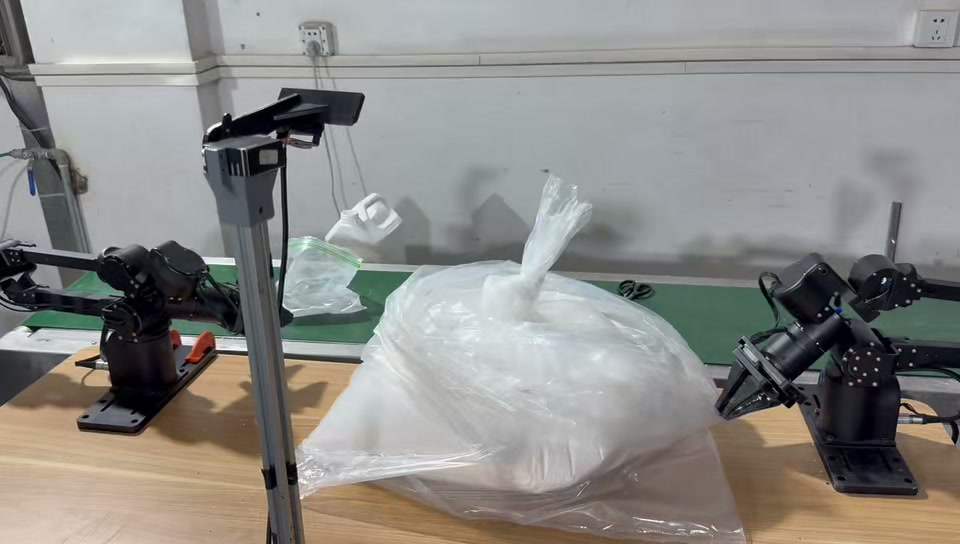
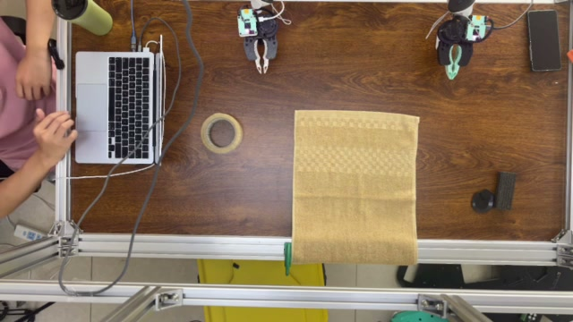

01 / Data infrastructure
Factory Manipulation
Dataset
A source-preserving record of real manipulation, built to make task analysis, imitation learning, and benchmarking easier to reproduce.
- 33
- tasks
- 2,016
- source files
- 10.198 GiB
- preserved data
Inside the dataset
The library spans 33 tasks and 23 archives. Its UMI material includes 13 UMI collections, 58 episodes, and 42,223 frames. Source files and provenance are preserved alongside task documentation and LeRobot v3 data.